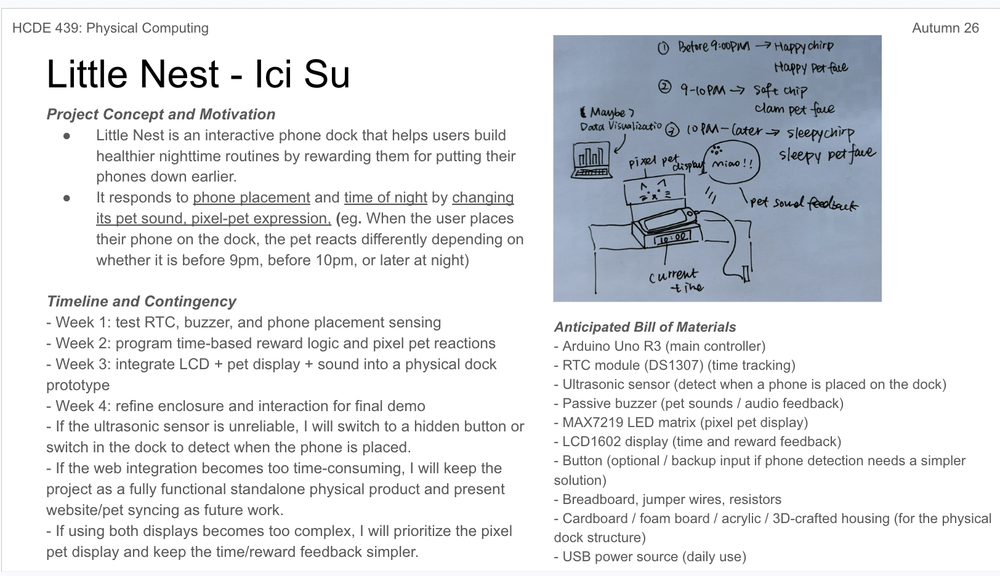

Little Nest is an interactive phone dock designed to help people build healthier nighttime routines by rewarding them for putting their phones down earlier. Instead of using negative reminders or screen-time warnings, Little Nest responds with a playful pixel pet and gentle sounds to make putting a phone away feel rewarding.
I often find myself scrolling on my phone longer than I intended, especially after coming home. I wanted to explore a more positive way to encourage myself to put my phone down earlier in the evening.
When a phone is placed on the dock, Little Nest detects its presence and checks the time using a real-time clock module. The pet's expression and sound change depending on how early the phone is put away.
The pet makes a happy chirping sound and shows an excited pixel expression. This is the most rewarding response.
The pet makes a softer chirp and displays a calm expression.
The pet makes a sleepy sound and displays a tired expression, encouraging an earlier phone-free routine the next evening.
The LCD screen will show the current time and brief feedback. A button will provide a second user interaction, such as replaying or silencing the pet's sound.
Arduino Uno R3: Main controller.
DS1307 RTC Module: Keeps track of the time of day.
Ultrasonic Sensor: Detects when a phone is placed on the dock.
Button: Additional user input for sound controls.
Passive Buzzer: Plays different pixel-pet sounds.
MAX7219 LED Matrix: Displays the pixel pet's expressions.
LCD1602 Display: Displays the current time and feedback.
Other Materials: Breadboard, jumper wires, resistors, USB power, and cardboard or foam board for the physical dock.
This sketch shows the proposed phone dock, pixel pet display, time display, and sound feedback for different phone placement times.

Week 1: Test the RTC, passive buzzer, and phone placement sensor.
Week 2: Program the time-based interaction logic and pixel pet expressions.
Week 3: Integrate the LCD, LED matrix, and sound feedback into a physical phone dock.
Week 4: Refine the enclosure, test the interactions, and prepare the final demonstration.
If the ultrasonic sensor is unreliable, I will use a hidden button or switch to detect phone placement.
If integrating both displays becomes too complex, I will prioritize the pixel pet display and simplify the time feedback.
If time permits, I would like to add a website where users can track rewards and care for a virtual pet. This is an optional extension rather than a requirement for the physical prototype.